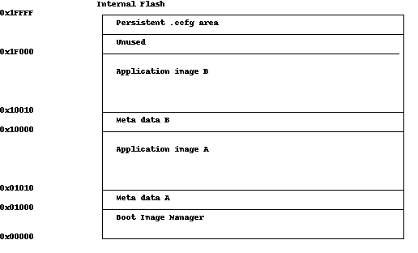

On-Chip OAD¶
This section describes the On-chip OAD process. On-chip OAD uses only internal flash to update the user application. No external memory components are required to implement On-chip OAD.
Constraints and Requirements for On-chip OAD¶
In order to perform On-chip OAD the application design must meet the following requirements:
- The application must be built without the
.ccfgsection. - Image header + application image must not exceed 60 KiB code size.
- The application must be built with OAD capabilities.
Please note that the OAD Image header differs in the EasyLink example projects compared to OAD examples in the BLE-Stack and TI 15.4-Stack.
On-Chip OAD Memory layout¶
The memory map for CC2640R2 internal flash in an On-chip OAD configuration is shown below.
The internal flash contains the BIM in the first flash page and the customer configuration area (.ccfg) in the last flash page. Both are persistent and can not be updated. The remaining flash pages are split in 2 sections A and B, each starting with a 16 Bytes meta data header followed by the application image. The application must not exceed 60 KiB code size.
Creating an On-chip OAD image¶
Prerequisites:
- Python 2.7
- Python intelhex-2.1
- Python crcmod-1.7
To build a project for On-Chip OAD with Code Composer Studio, the following settings must be configured:
Predefined symbols:
- FEATURE_OAD_ONCHIP
- HAL_IMAGE_A or HAL_IMAGE_B
In the TI-RTOS .cfg file, the reset vector addresses must be configured
/* * Assign an address for the reset vector. * * Default is 0x0, which is the start of Flash. Ordinarily this setting should * not be changed. */ // Image A Reset Vector Address m3Hwi.resetVectorAddress = 0x1010; // Image B Reset Vector Address //m3Hwi.resetVectorAddress = 0x10010;
Comment out the appropriate resetVectorAddress for the image you are not building.
Hex file generation must be enabled to let CCS generate a binary in hex format.
Now we can either combine the application with the BIM to flash both during production or we can just create and prepend the meta data for a regular firmware update.
For the former case, the python intelhex merge utility is used to combine the BIM and App into one hex file that can be downloaded later with UniFlash or SmartRF Flash Programmer 2:
cd <SDK_DIR>/examples/rtos/CC1310_LAUNCHXL/easylink/hexfiles/oad/<int_flash/ext_flash>/
python /usr/bin/hexmerge.py -o rfWsnNodeOad_CC1310LP_all.hex "--overlap=error" rfWsnNodeOad_CC1310LP_app.hex bim_extflash_cc1350lp_bim.hex
The resulting binary still lacks the OAD header, so we need to add it with the oad_image_tool.py:
python ../../../../../../tools/easylink/oad_image_tool.py -v 0x100 -m 0x1000 -t onchip -i production rfWsnNodeOad_CC1310LP_all.hex -ob rfWsnNodeOad_CC1310LP_all.bin
In the other case where an OAD image is desired, the same oad_image_tool.py is used, but with the command line options:
-t onchip-i app-m 0x1000(for image A) or-m 0x10000(for image B)- A version number that is newer than the current image residing on the device where major version (XX) and minor version (YY) must be of the format 0xXXYY, for example 2.3 would be 0x0203.
An example of building a binary for each case is shown below. If you are directly flashing the image to the device with the BIM, please see the next section.
OAD Image A:
python oad_image_tool.py -t onchip -i app -v 0x0100 -m 0x1000 -ob app_v1.bin app_v1.hex
OAD Image B:
python oad_image_tool.py -t onchip -i app -v 0x0200 -m 0x10000 -ob app_v2.bin app_v2.hex
Please note that BIM chooses the Image with the highest version number (provided that Image A and Image B have valid CRC status).